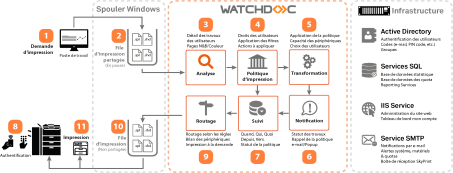

Principes relatifs aux files d'impression
Lors de l'installation de Watchdoc, une configuration par défaut est définie pour la file d'impression (ou pour les files) détectées par Watchdoc. Cette configuration peut être modifiée à tout moment. Par ailleurs, il est possible d'ajouter d'autres files d'impression aux files existantes.
Ce chapitre vous explique comment configurer et gérer vos files d'impression.
Notez que vous pouvez également créer une file d'impression depuis WSC (cf. WSC - Créer une file d'impression).
Qu'est-ce qu'une file d'impression ?
La file d'impression est une file d'attente ("queue", en anglais) dans laquelle les travaux d'impression sont placés avant d'être envoyés vers le périphérique d'impression (imprimante ou multifonction).
Lorsque les périphériques sont installés en réseau, la file d'impression est commune à tous les postes de travail et contient donc les travaux d'impression envoyés par tous les utilisateurs du réseau.
Une file d'impression est associée à un seul périphérique, mais il est possible de déclarer plusieurs files pour un seul périphérique, notamment si ce périphérique gère l'impression monochrome et couleur ou différents formats d'impression.
La file contient l'ensemble des ordres que l'imprimante doit exécuter pour effectuer l'impression d'un ou de plusieurs travaux.
Principe de la configuration
Pour soumettre un périphérique au contrôle de Watchdoc, il est impératif de configurer la file d'impression qui lui est associée dans Watchdoc.
Pour chaque périphérique déclaré, une file d'impression partagée est générée par défaut. Tant qu'elle n'est pas configurée, la file d'impression est opérationnelle mais n'est pas contrôlée par Watchdoc.
Configurer une file d'impression revient à associer une file shadow à la file partagée générée par défaut.
Dans la majorité des configurations, une file Watchdoc correspond à un périphérique d'impression.
Il peut être utile de déclarer 2 files d'impression pour un seul périphérique, notamment pour appliquer des règles d'impression spécifiques, comme imposer l'impression monochrome sur un périphérique capable d'imprimer en couleur.
Prérequis organisationnels
Avant de procéder à la configuration d'une file d'impression dans Watchdoc, vérifiez qu'il existe au moins un périphérique déclaré sur le serveur d'impression, que son pilote est installé et que la file partagée existe.
Rôle des files d'impression
-
File partagée : file générée par défaut par assistant d'imprimante lors de l'installation du périphérique d'impression réseau. Cette file ne dépend pas de Watchdoc. Elle a pour fonction de générer le spool
 File d'attente avant envoi au périphérique. A l'origine, le mot 'spool' est l'acronyme de 'simultaneous processing operations on line'.
Le spool d'impression désigne le fichier d'édition envoyé au périphérique d'impression. Il regroupe l'ensemble des ordres que l'imprimante doit exécuter pour mener à bien l'impression d'un ou plusieurs documents. correspondant aux travaux d'impression envoyés au périphérique.
File d'attente avant envoi au périphérique. A l'origine, le mot 'spool' est l'acronyme de 'simultaneous processing operations on line'.
Le spool d'impression désigne le fichier d'édition envoyé au périphérique d'impression. Il regroupe l'ensemble des ordres que l'imprimante doit exécuter pour mener à bien l'impression d'un ou plusieurs documents. correspondant aux travaux d'impression envoyés au périphérique.
-
File shadow : file créée par Watchdoc lors de la configuration de la file partagée. Cette file reçoit le spool d'impression contrôlé par Watchdoc et a pour fonction de l'envoyer vers le périphérique d'impression après analyse.

Pour chaque travail d'impression présent dans la file partagée, Watchdoc :
-
analyse les deux fichiers (.spl et .shd) générés par le spooler ;
-
extrait les données qu'il soumet aux filtres (conformes à la politique d'impression) ;
-
extrait les données d'authentification qu'il soumet à l'annuaire LDAP (pour vérifier que l'utilisateur y figure).
-
si aucun filtre ne bloque l’impression et que l'utilisateur est reconnu dans l'annuaire, Watchdoc déplace les spools analysés vers la file shadow qui, elle, les envoie au périphérique pour impression.